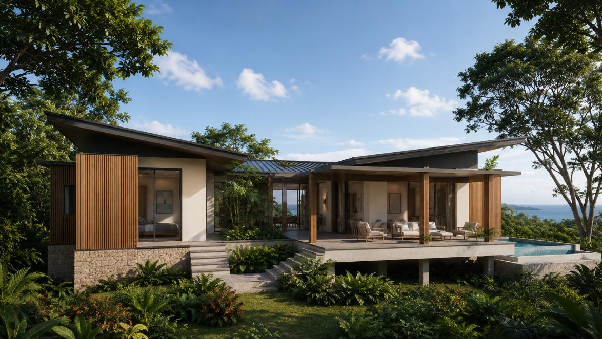
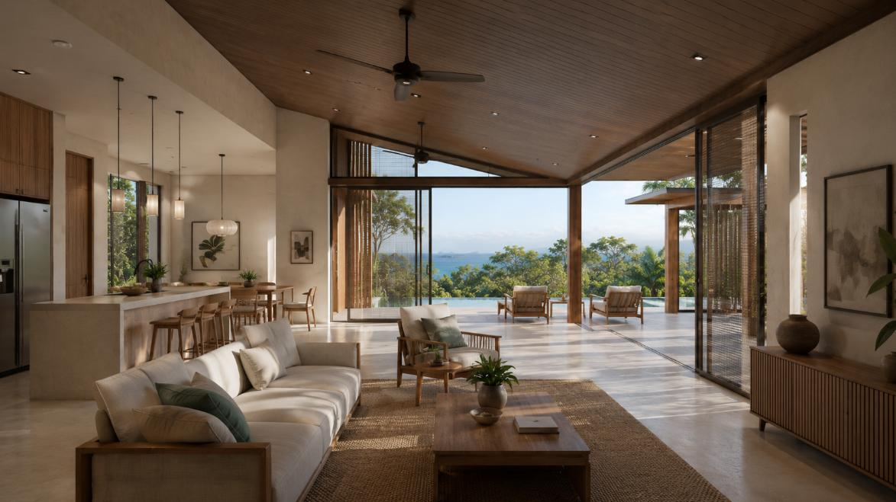
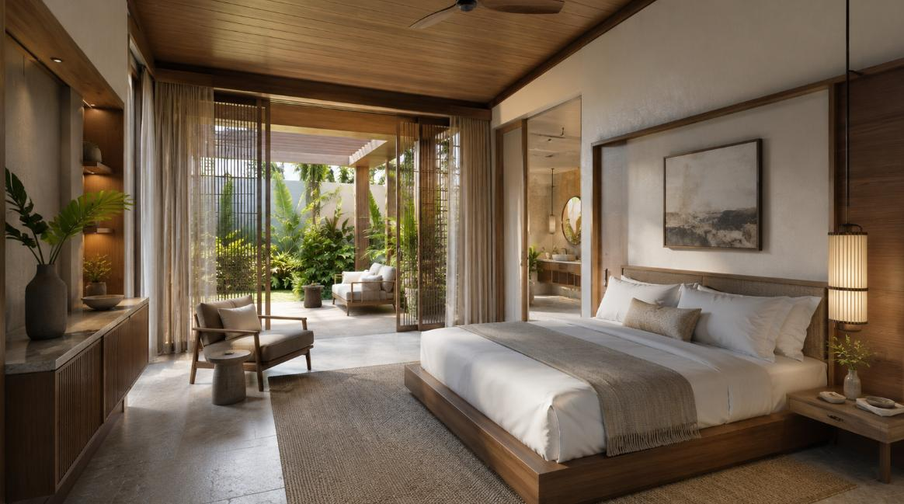
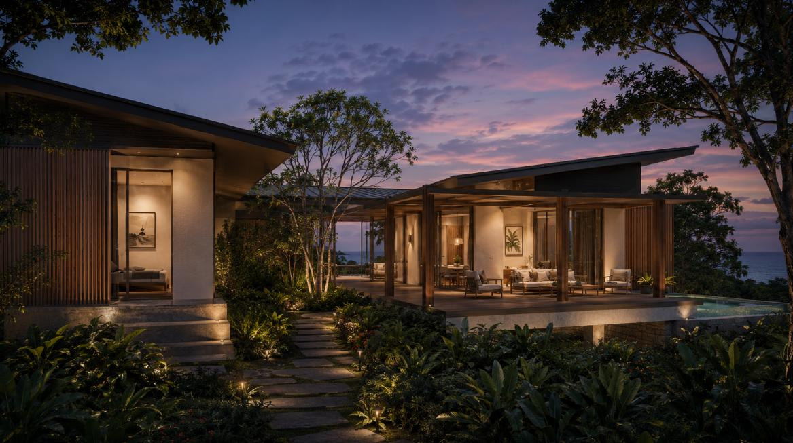

01
Primary Exterior — Linear View
The definitive side elevation: butterfly roof, pool terrace and open veranda

VTA-R01-01 · Linear Exterior Base · Daytime
Full Side Elevation — Butterfly Roof, Pool Terrace, Open Veranda
The primary reference for Villa A's exterior character. Shows the full side elevation with the butterfly roof
at its clearest angle. The villa sits on a raised stone plinth accessed by wide stone steps. The living wing
is fully glazed across the facade — sliding glass doors open to the deep covered veranda. Infinity pool
visible on the right terrace edge, extending toward Savannes Bay in the distance. Vertical timber slat
cladding on the end wings. Open courtyard passage visible between bedroom wing (left) and living wing (right).
Bay visible on the right horizon.
Differs from Cottage A
Villa A is larger, raised on a stone plinth, and has a private pool. The split-wing plan creates an open
courtyard between bedroom and living zones. The facade is full-height glazed sliding doors — not louvered
bi-folds as in the Cottage. Timber vertical slat cladding replaces the Cottage's stone-and-lime render end walls.
02
Courtyard & Split-Wing Exterior
Right-elevation showing the courtyard between bedroom and living wings

VTA-R01-02 · Courtyard / Split-Wing · Daytime
Right-Side Elevation — Open Courtyard Between Wings
Right-side view revealing the split-wing plan in full. The bedroom wing (left, with solid-panel sliding doors
and vertical timber slat cladding) is separated from the open living wing (right) by a planted open courtyard.
Stone base with tropical planting between the two wings. Wide stone staircase at centre. Living wing veranda
extends right with pool terrace beyond. Bay visible on far right horizon. The courtyard creates the sense of
a private outdoor room between interior zones.
03
Interior Views
Open-plan living / veranda and primary bedroom with garden access

VTA-R01-03 · Main Living / Veranda Interior
Open-Plan Living, Kitchen & Veranda
Large open-plan space: living room foreground with linen sectional and timber coffee table, kitchen and
dining behind left, full-height glazed doors sliding open to the deep covered veranda. Veranda seating
frames a view of landscape and bay beyond. Timber V-profile ceiling, polished concrete floor, jute rugs.
Ceiling fans throughout. Bamboo/reed screen visible right. Demonstrates the indoor-outdoor continuity
that defines the Villa A experience.

VTA-R01-05 · Bedroom / Garden Courtyard View
Primary Bedroom — Garden & Courtyard Outlook
King bedroom with timber ceiling, neutral linen, sliding panel opens to the private courtyard garden.
Rattan screen / sheer curtain layering. En suite bathroom visible through archway right, with round
mirror and timber vanity. Timber low-platform bed, bedside pendants, dresser unit left. Woven seagrass
rug. Courtyard planting (tree ferns, palms) seen through the sliding panel — the bedroom sits in a
landscape pocket rather than facing the bay directly.
04
Twilight & Evening Atmosphere
Night ambiance render — the villa lit against a dusk sky

VTA-R01-04 · Twilight / Evening Light
Right-Side Elevation at Dusk — Warm Interior Light Against Purple Sky
Same right-elevation angle as VTA-R01-02 but at twilight. Deep purple-blue sky with pink horizon cloud.
Warm amber light pours from interior through the living wing glazing and the courtyard. Path lighting and
uplights illuminate the courtyard garden tree and approach steps. Interior artwork and furniture clearly
visible through the open facade. Pool terrace visible right. The warm-light-against-dusk-sky mood is the
reference for any evening/night exterior shot of Villa A.
05
Villa A vs Cottage A — Key Distinctions
Critical differences for correct Estate Walkthrough imagery
Villa Type A
- Split-wing plan — open courtyard between bedroom and living
- Raised on stone plinth, wide stone approach steps
- Private infinity pool on terrace deck
- Full-height sliding glass doors across living facade
- Vertical timber slat cladding on end walls
- Open veranda with timber post structure (no solid roof soffit at edge)
- Butterfly roof reads as two planes with a valley between wings
- Bay + ocean views from veranda and pool terrace
- Open-plan kitchen / dining / living — single great room
- Bedroom looks onto private courtyard garden, not the bay
Cottage Type A
- Linear plan — single bar with all rooms in sequence
- Ground-level plinth, stepped stone approach path
- No pool — outdoor shower court is the exterior water feature
- Louvered timber bi-fold doors across living facade
- Stone and lime render walls throughout
- Deep covered veranda with solid soffit, ceiling fan
- Butterfly roof reads as one continuous form over the bar
- Landscape and mangrove views; bay glimpsed beyond
- Separate living and bedroom zones visible through open plan
- Bedroom faces the landscape / bay through louvered wall
06
Visual Intent & Rendering Rules
Applies to all Villa A imagery used in the Estate Walkthrough
- The butterfly roof must be visible and clearly legible in all exterior shots
- Pool must be present in exterior views that show the terrace
- No people in primary exterior images
- Natural daylight or soft warm evening light only — no harsh mid-day overexposure
- Bay and ocean must be visible on the horizon in exterior renders
- Vegetation must be realistic and native to Saint Lucia
- No visible water tanks, pumps, cisterns or service infrastructure
- Courtyard garden must contain tropical planting — not left bare or hardscaped
- Interior renders: polished concrete or large-format stone tile floors throughout
- All glazing to read as open or operable — not dark reflective glass
- Timber ceiling profile must be visible in interior renders
- The villa should feel generously proportioned — larger than its footprint